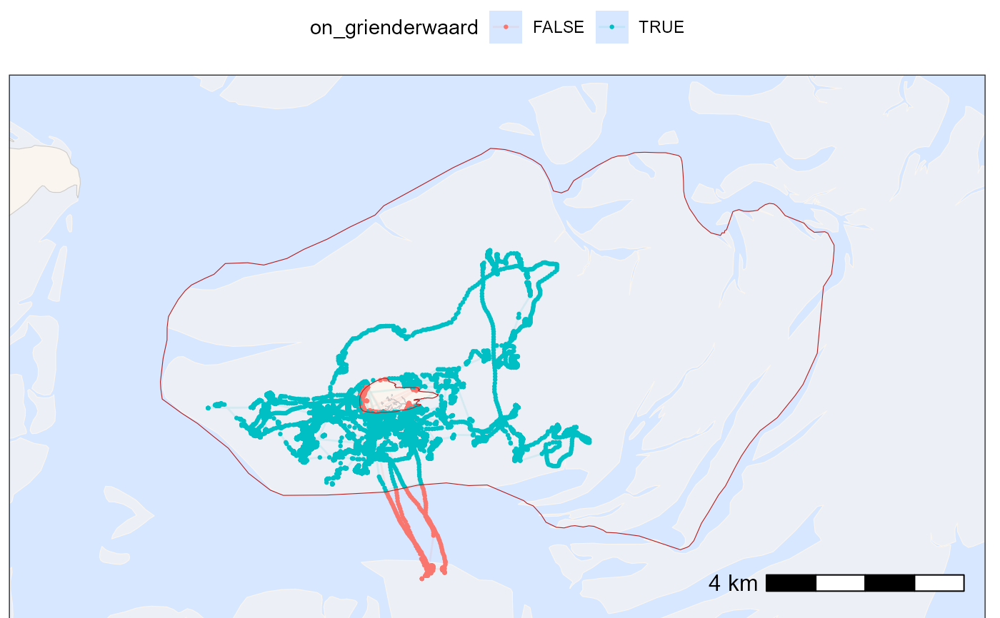

Detects which positions intersect a polygon sf object.
Usage
atl_within_polygon(
data,
x = "x",
y = "y",
polygon,
col_name = deparse(substitute(polygon))
)Arguments
- data
A
data.tableor similar containing at least x and y coordinates.- x
The name of the x coordinate, default "x".
- y
The name of the y coordinate, default "y".
- polygon
An
sfpolygon object with a EPSG:32631 (UTM zone 31N) as CRS.- col_name
The name of the output column added to
data. Defaults to the name of the polygon object passed in.
Value
The original data with an added logical column indicating
whether each position intersects the polygon.
Examples
# packages
library(tools4watlas)
library(sf)
library(ggplot2)
# load example data
data <- data_example
# assign positions within the polygon of Grienderwaard
data <- atl_within_polygon(
data, polygon = grienderwaard, col_name = "on_grienderwaard"
)
# new bounding box using Grienderwaard for plot
bbox <- atl_bbox(grienderwaard, buffer = 1500)
# create a base map for background
bm <- atl_create_bm(bbox)
# plot points on and out of Grienderwaard
bm +
geom_path(
data = data, aes(x, y, colour = on_grienderwaard),
linewidth = 0.5, alpha = 0.1, show.legend = TRUE
) +
geom_point(
data = data, aes(x, y, colour = on_grienderwaard),
size = 0.5, alpha = 1, show.legend = TRUE
) +
scale_color_discrete() +
theme(legend.position = "top") +
# add Grienderwaard polygon
geom_sf(data = grienderwaard, color = "firebrick", fill = NA) +
# set extend again (overwritten by geom_sf)
coord_sf(
xlim = c(bbox["xmin"], bbox["xmax"]),
ylim = c(bbox["ymin"], bbox["ymax"]), expand = FALSE
)
#> Coordinate system already present.
#> ℹ Adding new coordinate system, which will replace the existing one.
